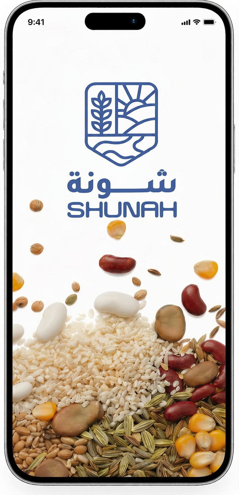
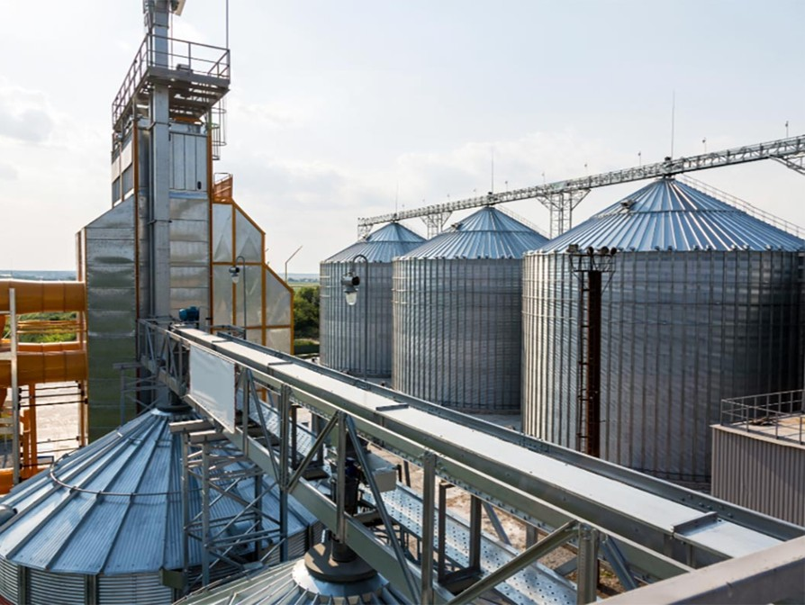

African Farmers
450M
Shunah is a next-generation agritech platform for dry crops. Leveraging satellite data, computer-aided vision, dynamic market intelligence, and IoT infrastructure, Shunah digitizes and optimizes supply chains at scale.
Understand Our Technology →Shunah is building the infrastructure layer for African agriculture — a system designed to carry billions in value, coordinate fragmented supply, and unlock capital at scale — made accessible through a single, unified app.

Through digital aggregation, computer-aided vision, and infrastructure connectivity, Shunah transforms fragmented agricultural supply chains into a streamlined, data-driven ecosystem.
Digital Aggregation Share
Farmer Interactions
Tons Assessed
Tech Accuracy
Third Parties Connected
Africa’s dry crops production is massive, fragmented, and disconnected from structured institutional demand. Shunah focuses on building the tech infrastructure that connects fragmented supply to processors, manufacturers, and exporters.
450M

2.5MT

1.5%
450KT